Argentijnse grill bij het Rembrandtplein
Steakhouse Grill Tango
Vers Argentijns vlees van de grill, empanadas, gambas en een zonnig terras midden in Amsterdam.
- Reguliersdwarsstraat 125 Amsterdam
- Dagelijks vanaf 12:00
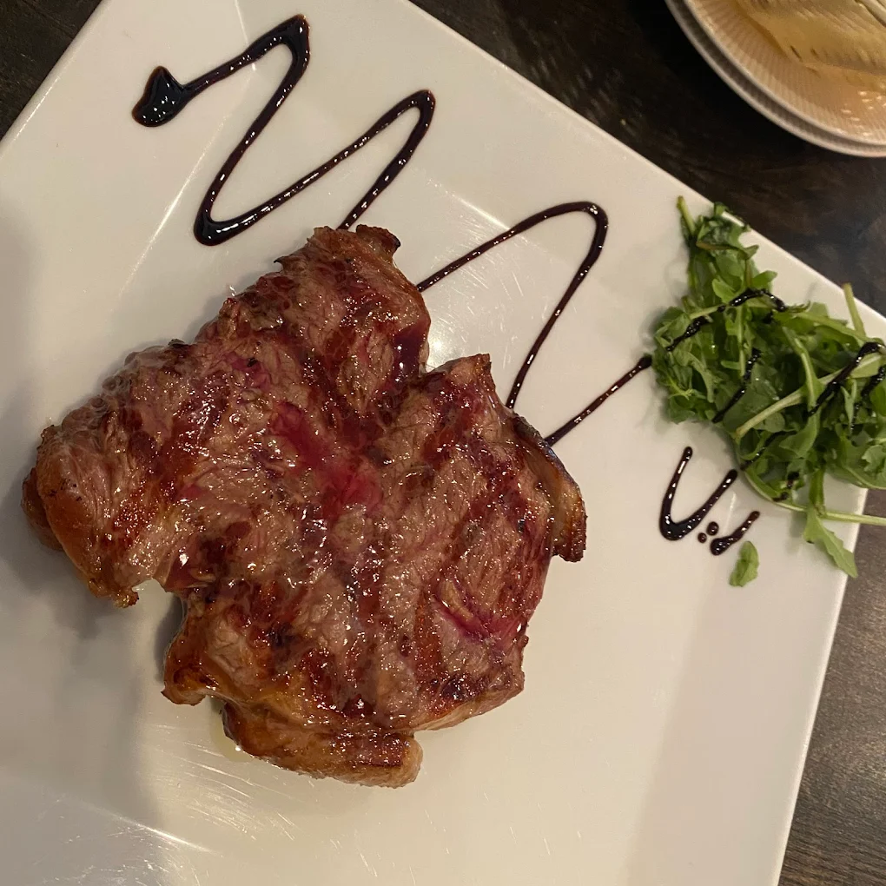
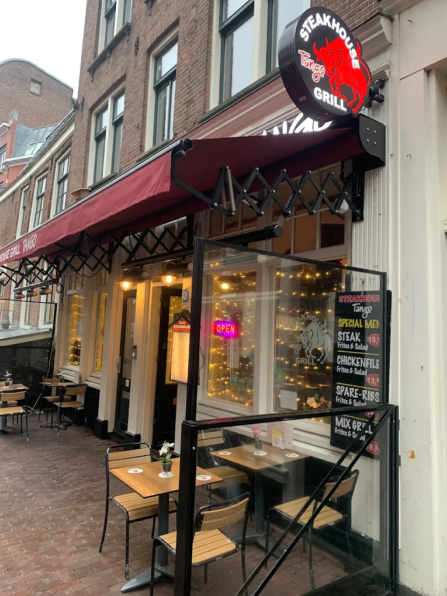
Mooi, gezellig en modern, met de focus op goed eten
Tango is een sfeervol restaurant in hartje Amsterdam, op een paar stappen van het Rembrandtplein. Alle steaks komen van vers Argentijns vlees en gaan op de grill. Daarnaast vind je op de kaart Argentijnse empanadas en chorizo's, vis van de grill en burgers van Black Angus.
Bij mooi weer zit je buiten op ons zonnige terras, midden in de stad.
Carne: kies je stuk en je gewicht
Al onze steak is vers Argentijns vlees. Geserveerd met friet, gepofte aardappel met zure room of gekruide rijst; sauzen en bijgerechten bestel je erbij.
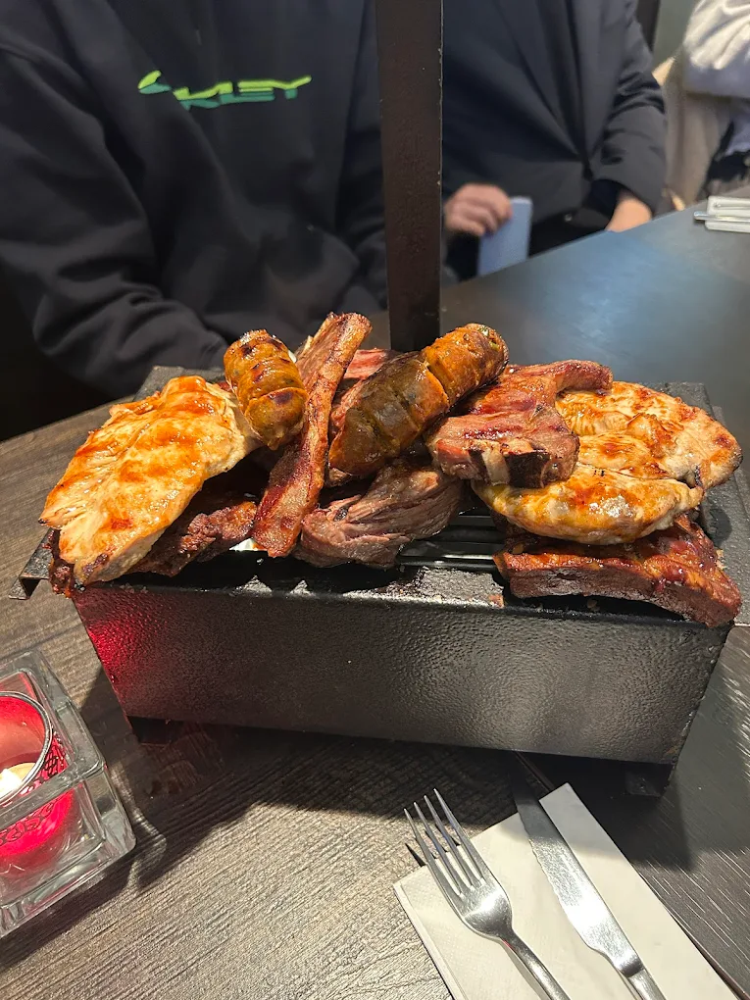
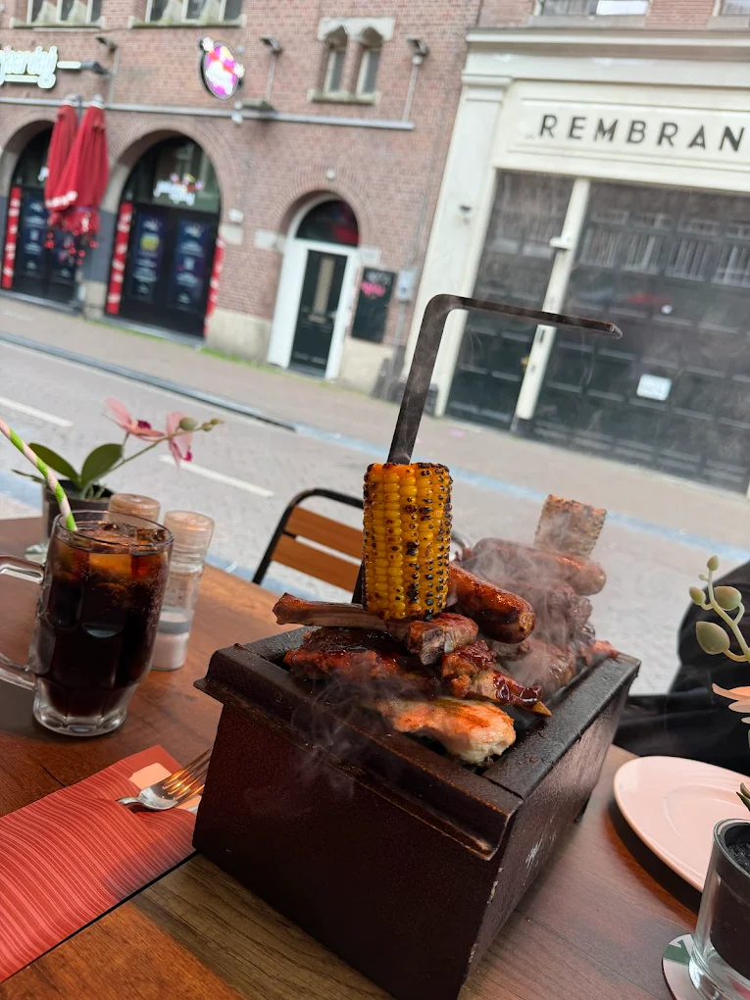
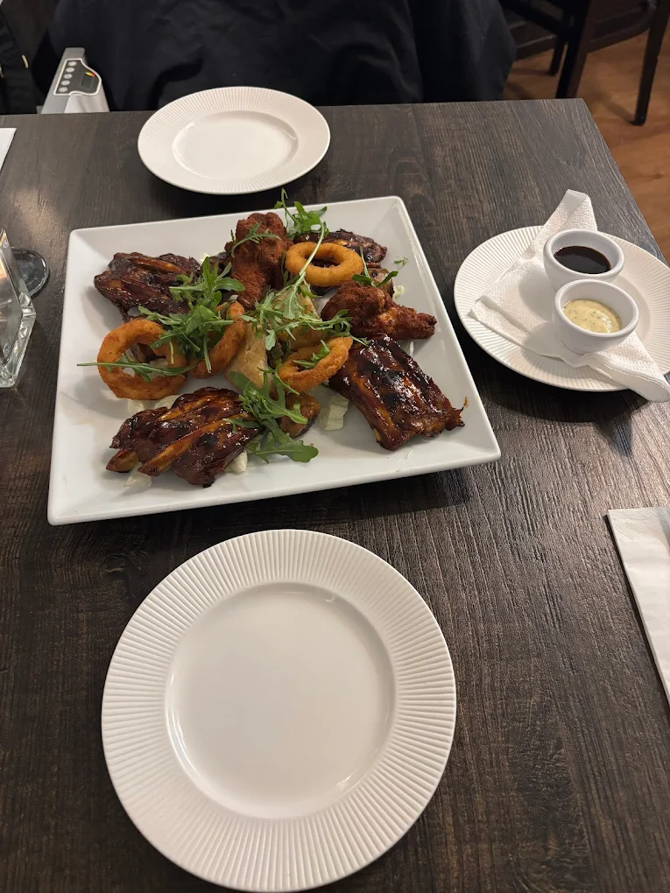
De menukaart
Alle prijzen in euro's. Vraag gerust naar een andere saus bij je steak.
Sopas soepen
- Sopa de verduras6,95Soep van verschillende groenten
- Carbonada8,50Soep van rode paprika, ui, kruiden en stukjes rundvlees
- Sopa de pescado9,00Vissoep
Tapas frías koude tapas
- Tortillas con guacamole8,00Maïstortilla's met guacamole en crema
- Carpaccio14,50Dun gesneden rauwe ossenhaas, rucola, Parmezaanse kaas, pijnboompitten en pesto
Entradas calientes warme voorgerechten
- Pan con mantequilla de hierbas3,95 p.p.Vers afgebakken brood met kruidenboter
- Alitas de pollo9,00Pittige kippenvleugels
- Chorizos9,00Gegrilde pittige Argentijnse worstjes
- Empanada de verduras9,00Argentijnse pasteitjes met groente
- Empanada de carne9,00Argentijnse pasteitjes met vlees en bbq-saus
- Gambas al ajo14,50Grote garnalen van de grill met knoflooksaus
- Calamares9,50Gefrituurde inktvis met knoflooksaus
- Tapas voor 2 personen31,00Een selectie van verschillende tapas
Ensaladas salades
- Ensalada mixta con avocado8,50Tomaat, komkommer, sla, rucola, wortel, olijf, rode kool, maïs, avocado
- Ensalada con feta9,00Gemengde salade met fetakaas
- Caprese9,95Mozzarella, tomaat, pesto, kappertjes
- Ensalada de pollo14,50Gemengde salade met gegrilde kipfilet en honing-mosterddressing
Alle gerechten hieronder komen met friet, gepofte aardappel met zure room of gekruide rijst. Steak per gewicht vind je bij Carne.
Complete menu steak met saus
- Bife churrasco de cuadril (300 g) & pepersaus29,50Rumpsteak met pepersaus
- Bife de chorizo (250 g) & knoflooksaus32,50Entrecote met knoflooksaus
- Bife de lomo (250 g) & chimichurri34,50Ossenhaas met Argentijnse chimichurri
- Bife ancho (300 g) & bearnaise35,50Rib-eye met bearnaisesaus
Chef specials
- Nice pork (300 g)27,50Varkenshaas van de grill met champignonsaus
- Beef mango (250 g)29,50Gegrilde rumpsteak met mangosaus
- Entrecote (250 g) & baked mushroom32,50Gegrilde entrecote met gebakken champignons
- Entrecote (250 g) & baked mozzarella37,50Gegrilde entrecote met kerstomaatjes en mozzarella
- Lovely eye (300 g)35,50Gegrilde rib-eye met een spiegelei
- Lomo satay (250 g)36,50Gegrilde ossenhaas met pindasaus
- Lomo gorgonzola (250 g)36,50Gegrilde ossenhaas met gorgonzolasaus
- Lomo butter (250 g)40,50Ossenhaas gebakken in boter met verse knoflook, rozemarijn en asperges
Especiales specials van het huis
- Costillas de cerdo24,50Gemarineerde spareribs van de bbq, of pittig
- Costillas de cordero27,50Gegrilde Nieuw-Zeelandse lamskoteletjes
- Steak vs ribs27,50Ribs en rumpsteak
- Plato Argentinos28,50Ossenhaas, kipfilet, spareribs en chorizo's
- Pinchos de carne35,50Spies van ossenhaas met paprika en ui
- Plato Tango34,50Gegrilde ossenhaas, lamskoteletjes en gegrilde kip
- Lomo & gambas35,50Gegrilde ossenhaas met grote garnalen
- Tres carnes36,50Rumpsteak, entrecote en ossenhaas
- Plato de verduras25,00Groenten, geroosterde maïs, gegrilde tomaten, uienringen en rijst
- Meat lover meets the meat41,00 1 pers. · 80,00 2 pers.Sparerib, rumpsteak, entrecote, chorizo, lamskotelet, kipfilet en maïskolf
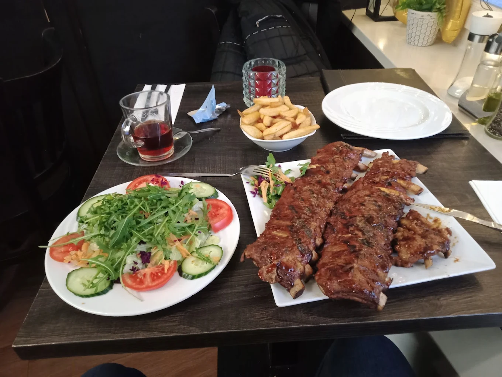
Pescados vis
- Sardinas22,50Sardines met knoflooksaus
- Salmón26,50Gegrilde zalmfilet met knoflooksaus
- Atún a la parrilla29,50Gegrilde tonijnfilet met knoflooksaus
- Gambas a la parrilla32,50Gegrilde grote garnalen met knoflooksaus
- Mixta de pescado34,50 1 pers. · 68,00 2 pers.Sardines, zalm, tonijn, gambas en calamares met knoflooksaus
Vis komt met salade en een keuze uit friet, gepofte aardappel met zure room of rijst.
Pollo kip
- Pechuga de pollo19,95Gegrilde kipfilet
- Pinchos de pollo26,00Gegrilde kipfilet met champignon, paprika, ui, courgette, aubergine en maïskolf
- Chicken with mushroom25,00Gegrilde kipfilet met champignonroomsaus
- Chicken satay23,50Gegrilde kipfilet met pindasaus
Met friet, gepofte aardappel met zure room of gekruide rijst.
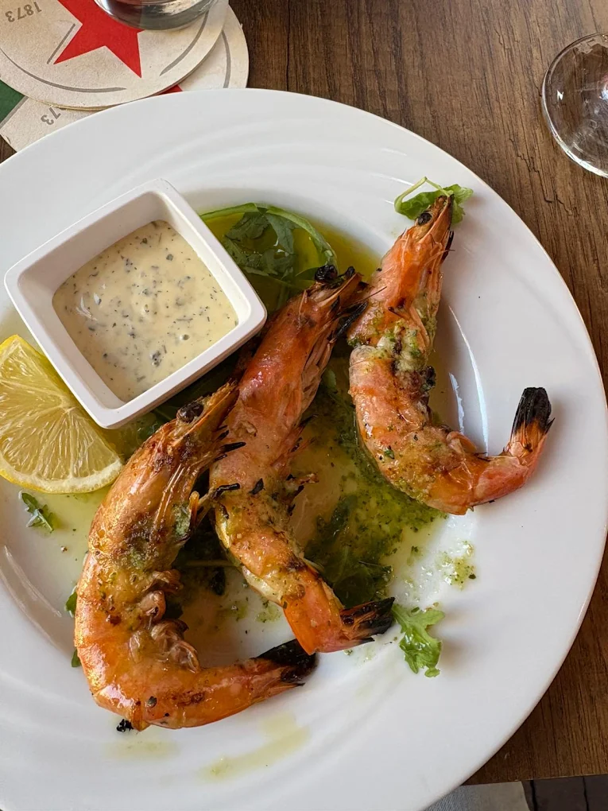
Burgers
Met friet. Alle beefburgers zijn van Black Angus.
- Chicken burger17,50Krokante kip met sla, cheddar, tomaat en burgersaus
- Cheese burger17,50Black Angus beefburger met sla, cheddar, tomaat en burgersaus
- American burger19,50Black Angus beefburger met cheddar, sla, tomaat, ui, bacon en bbq-saus
- American burger special21,50Zoals de American burger, met een ei
- Fat burger25,00Dubbele Black Angus beefburger met sla, cheddar, bacon, ui, tomaat en burgersaus
Special prices
Vraag in het restaurant naar de prijs.
- Fish & chips
- Chicken schnitzelGepaneerde kipfilet met friet
- Fajita chickenKruidige kipfilet met paprika, ui, zure room en 2 wraps
- Fajita beefKruidig rundvlees met paprika, ui, zure room en 2 wraps
Guarniciones bijgerechten
- Papas fritas5,50Friet met mayonaise of ketchup
- Papa asada con crema5,50Gepofte aardappel met zure room
- Arroz criollo con verdura5,50Gekruide rijst
- Choclo con manteca6,00Gegrilde maïskolf met boter
- Tomate a la parrilla5,50Verse tomaat van de grill
- Champiñones a la parrilla5,00Gegrilde champignons
- Pincho de verdura a la parrilla7,50Gegrilde groenten
- Aritos de cebolla5,00Gefrituurde uienringen
Salsas sauzen
- Pepersaus, champignonsaus, chimichurri of bearnaise2,95
- Pittige saus, bbq-saus of knoflooksaus2,50
- Mayonaise of ketchup1,00
Postre desserts
- Dame blanche5,50Vanille-ijs met warme chocoladesaus
- Tartufo nero7,50Truffelijs met een hart van zabaione, noten en cacao
- Tiramisu7,50Met lange vingers, koffie en mascarpone
- Cheesecake7,50
- Apple pie6,50
- Brown cake6,00
Café koffie en thee
- Espresso3,50
- Koffie3,50
- Dubbele espresso4,50
- Cappuccino4,00
- Warme chocolademelk4,50
- Caffè latte4,50
- Thee3,00
- Verse muntthee4,00
- Irish coffee (Jameson)9,95
- French coffee (Grand Marnier)9,95
- Italian coffee (Amaretto)9,95
- Spanish coffee (Tia Maria)9,95
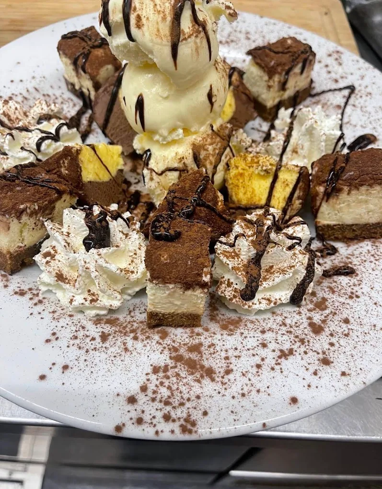
Drinken
Argentijnse wijnen bij je steak, Quilmes uit Argentinië of een cocktail op het terras.
Huiswijn
| glas | 0,5 l | 1 l | |
|---|---|---|---|
| Rood | 5,50 | 15,50 | 27,50 |
| Wit | 5,50 | 15,50 | 27,50 |
| Rosé | 5,50 | 15,50 | 27,50 |
| Sangria | 6,00 | 16,50 | 28,50 |
| glas | fles 0,7 l | |
|---|---|---|
| Malbec (rood), Argentinië | 6,50 | 29,50 |
| Prosecco | 5,50 | 25,50 |
Tinto rode wijn per fles
- Phebus Malbec, Argentinië31,95Vol rood met een paarse gloed. Veel rood en zwart fruit (pruim, kers) met een vleugje leer en tabak
- Cabernet Sauvignon Trapiche Melodias, Argentinië36,95Donkerrood; krachtige smaak met een vlezige structuur
- Covilla Crianza, Spanje37,95Diep rood. Complexe neus van zwartebessenjam, rijp rood fruit, vanille en cacao
- Luc Pirlet Cabernet Sauvignon Merlot, Frankrijk39,95Sappig, fris en zacht, met goede structuur
- Pinot Noir La Guirlande, Frankrijk44,95Licht rood met kersenrode gloed; elegant, veel fruit en een fijne frisheid
- Broquel Malbec Trapiche, Argentinië69,95Diep paars, bijna zwart. Vol, met krachtige tannines
Blanco & rosé
- Chardonnay Finca Flichman, Argentinië6,50 glas · 29,50 flesVol van smaak, met behoud van frisheid en fruit
- Sauvignon Blanc Trapiche Melodias, Argentinië31,95 flesHelder van kleur en frisse aroma's; veel fruit en een goede frisheid
- Phebus rosé, Argentinië6,50 glas · 31,50 fles
Cocktails 11,00
- MojitoMunt, citroensap, gember, bruine suiker en een scheutje bruiswater
- Pornstar martiniWodka, passievrucht, vanille en een shot mousserende wijn
- Espresso martiniKoffie, wodka en koffielikeur
- Piña coladaWitte rum, kokosmelk, ananassap en een cocktailkers
- Aperol spritzAperol, prosecco, bruiswater en sinaasappel
Bier
- Heineken tap4,00 S · 6,50 M · 8,20 L
- Quilmes (Argentinië)6,80
- Corona6,50
- Wieckse Witte6,50
- San Miguel6,80
- Radler6,50
- Strongbow6,50
- Affligem Dubbel6,80
- 0.0% bier5,50
Fris
- Coca-Cola, Coca-Cola light, Fanta, 7Up, tonic, ice tea4,20 · 7,00 groot
- Appelsap, jus d'orange4,50 · 7,30 groot
- Acqua Panna, San Pellegrino3,00 0,25 l · 7,00 0,75 l
Aperitief & gedistilleerd
- Martini (rosso of bianco)6,50
- Port (rood of wit)6,50
- Campari5,80
- Gin, Bacardi, wodka6,80
- Jägermeister6,80
- Kahlúa, Malibu, Tia Maria, limoncello6,75
- Amaretto, sambuca, Baileys6,75
- Grand Marnier, tequila7,00
- Jameson, Johnnie Walker Red Label7,50
- Johnnie Walker Black Label, Jack Daniel's8,50
- Rémy Martin, Courvoisier, calvados9,00
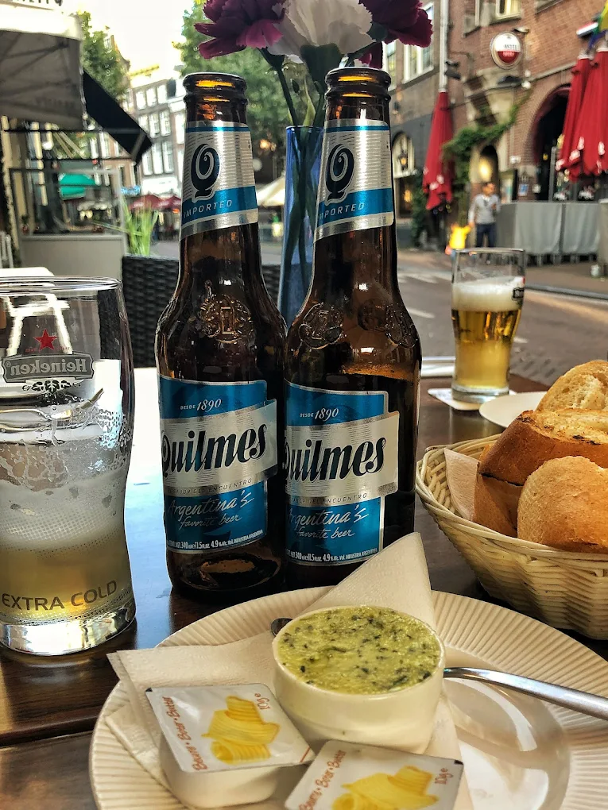
Een zonnig terras midden in de stad
Binnen zit je in een warm, modern interieur met een volle bar. Buiten, onder de rode luifel in de Reguliersdwarsstraat, heb je het terras: een fijne plek voor een lange lunch of een steak in de avondzon.
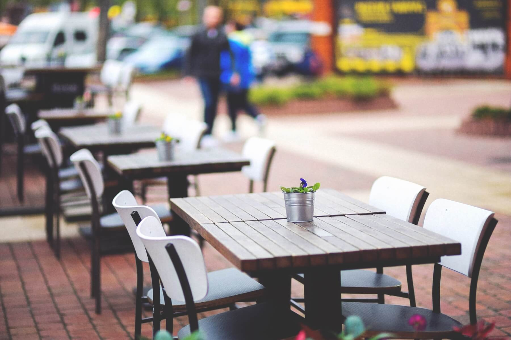
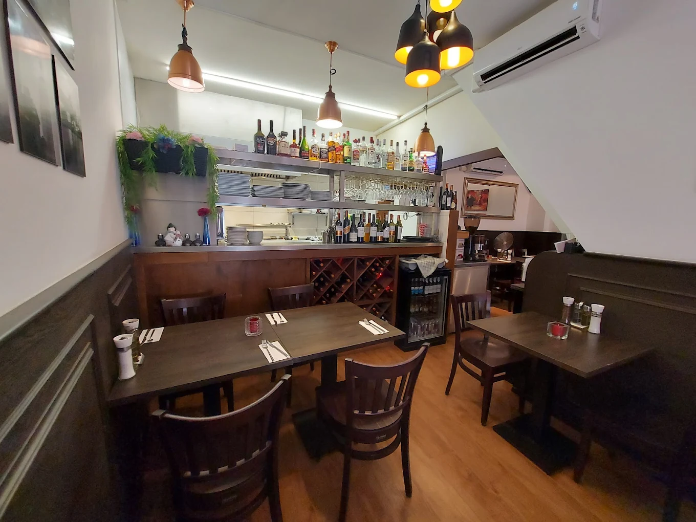
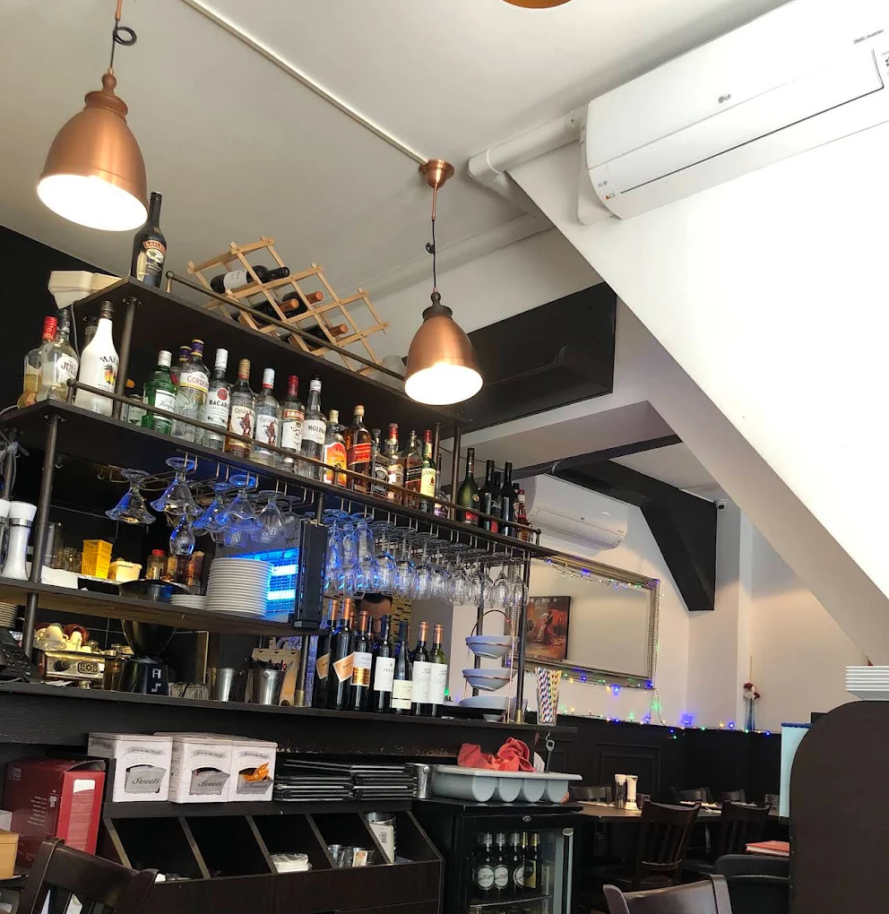
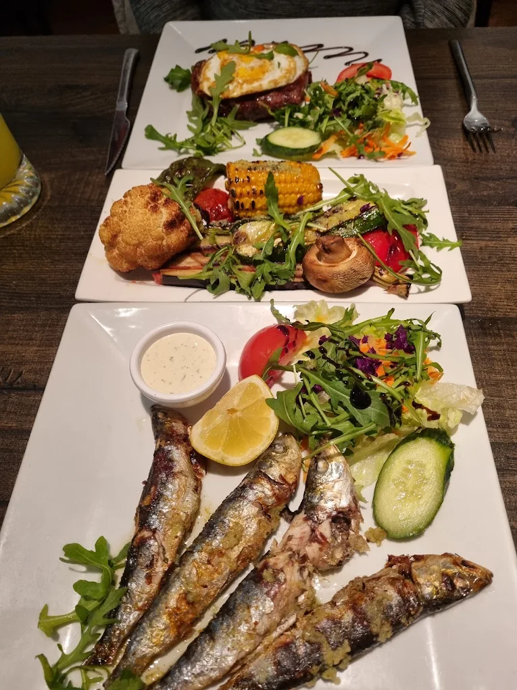
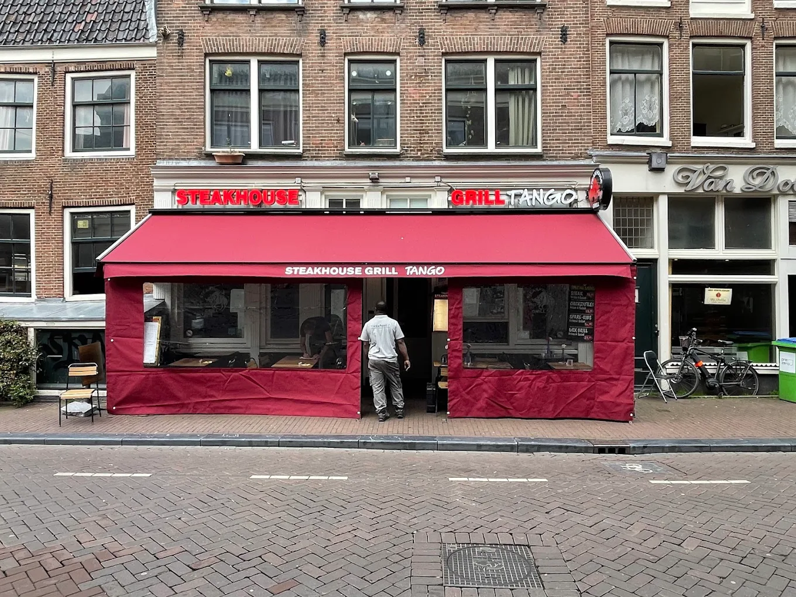
Reserveer een tafel
Bel ons, mail, of laat hier je gegevens achter. We bevestigen je reservering zo snel mogelijk.
Je vindt ons hier
Steakhouse Grill TangoReguliersdwarsstraat 125
1017 BL Amsterdam
Bij het Rembrandtplein, in het centrum van Amsterdam.
- Telefoon
- 020 334 6692
- info@tangogrill.nl
- Open
- Dagelijks vanaf 12:00